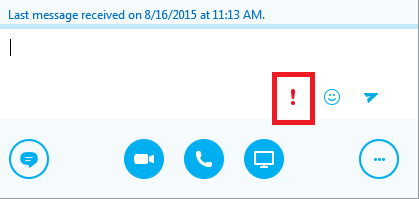
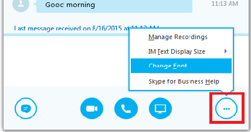
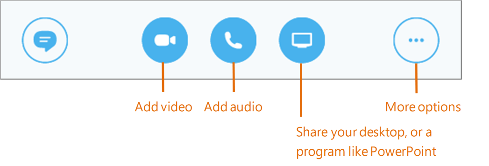
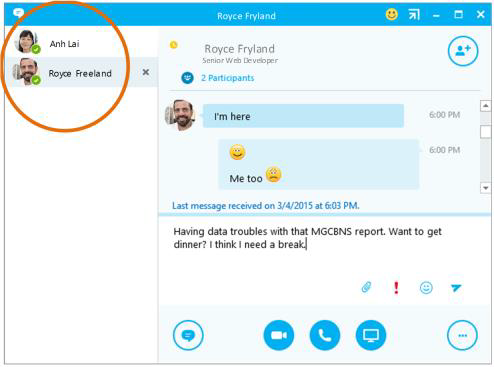
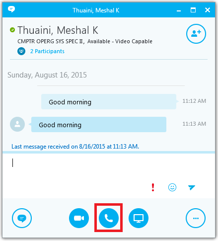

Communicating with Contacts
Instant Messaging
Use instant messaging (IM) to touch base with your contacts right away. Send and receive text messages in real time over an Internet Protocol network, such as the Internet, or an organization's corporate network. Instant messaging is available for both Skype-to-Skype and multiparty communication. IM text is encrypted for enhanced security; however it is not considered as an official way of communication.
- In your Contacts list, point to the contact you want to IM. If you want to IM with more than one contact, hold down the Ctrl key and click each contact name.
- Click the IM button.
- Type your message and press the Enter key on your keyboard.
Need to add someone to the IM?
From the main Skype for Business window, drag a contact pic onto the IM window.
Show High Importance
Type in your message in the empty text field that appears, and press the "Enter" key after each message to send it. Click the "!" icon to set specify this message as having high importance.
Set Font Settings
You can change the IM font settings by clicking on the more options icon (see below) and selecting Change Font.
Share Multimedia
Add audio, video and share files in an IM conversation
Switch between Conversations
If you have several conversations or meetings going on at the same time, Skype for Business displays them all in one place, so you can toggle between them.
Click a tab on the left to view an IM conversation.
Find IM Conversation History
If you use Outlook and Exchange, Skype for Business automatically saves your IM conversation history. To view or continue a previous IM conversation or see an IM request you missed:
- Click the Conversations tab.
- Click the All or Missed tab. If you don’t see the conversation you’re looking for, click View More in Outlook at the bottom of the list.
- Double-click the conversation that you want to open.
Audio Calls
Setup Audio Device
First things first: Make sure your microphone is enabled and the microphone/speaker volume is set correctly before starting your audio call.
Set up your audio device and check the quality. You can use your computer’s mic and speakers, plug in a headset.
- Click Select Your Primary Device in the lower-left corner of the main Skype for Business window.
- Click Audio Device Settings.
- Pick your device from the Audio Device menu, and adjust the speaker and mic volume.
Start a Call
- Hover on a contact’s pic until the quick menu appears.
- Click the Phone button.
Alternatively, you can click the phone icon on any open chat window to start an audio call with the person you're chatting with
Start a Conference Call
- In your Contacts list, select multiple contacts by holding the Ctrl key, and clicking the names.
- Right-click any of the selected names, then click start a Conference Call.
- Click Skype Call.

Answer a Call
When someone calls you, an alert pops up in the lower-right of your screen.
- To answer the call, click anywhere on the photo area.
- To reject the call, click Ignore.
- To start an instant messaging (IM) conversation with the caller instead of an audio call, click Options, and then Reply by IM.
- To reject the call and other calls, until you change your status click Options, and then Set to Do not Disturb.

Invite more people to a call
- In the Meeting pane, click or, Pluse Icon in the Participants pane, click Invite More People.
- Select or multi-select (Ctrl-click) from your contacts, or type someone’s name or phone number in the Search field, then select them from the results. Click OK.
- Your new invitees receive a request to join your call.
Video Calls
Setup Video Device
- You need a camera to share video of yourself, but you don’t need one to see someone else’s video.
- From the main screen, click Tools then Video Device Settings.
- If you see you, you’re set! If not, make adjustments. Click Camera Settings.

Start a Video Call
- Tap a contact’s picture.
- Tap the Video button.
- A message pops up on the other person’s screen asking if they want to accept your call. (To stop showing video of you at any point, just click the Video button again.)

Choose a View
- In the conversation window, click the Pop out video gallery arrow.
-
Click the Pick a layout button and choose a view:
- Gallery View to show all the participants’ video streams.
- Speaker View to show only the presenter’s.
- Content View to show only the meeting content.
- Compact View to show pics of the participants in a compact window.
- Click Full Screen View for a large view of the video streams.
- Click Pop in the video gallery to show the gallery in the conversation window again.

Answer a Video Call
When someone calls you, you will get an alert in the lower right of your desktop. Make sure you are not wearing pajamas and that you don’t have lettuce in your teeth!
- To answer, click their pic.
- To ignore, click Ignore.
- To start an instant messaging (IM) conversation with the caller instead of an audio call, click Options, and then Reply by IM. To reject the call and other calls, until you change your status, click Options, and then Set to Do not Disturb.
Start a Video Meeting
You can start an ad-hoc video meeting any time. If people are available you can bring them into a meeting now instead of scheduling one for later.
- In your Contacts list, select multiple contacts by holding the Ctrl key and clicking their pics.
- Right-click one of the selected names, and click Start a Video Call. When you start a video call, you automatically use Skype for Business computer audio